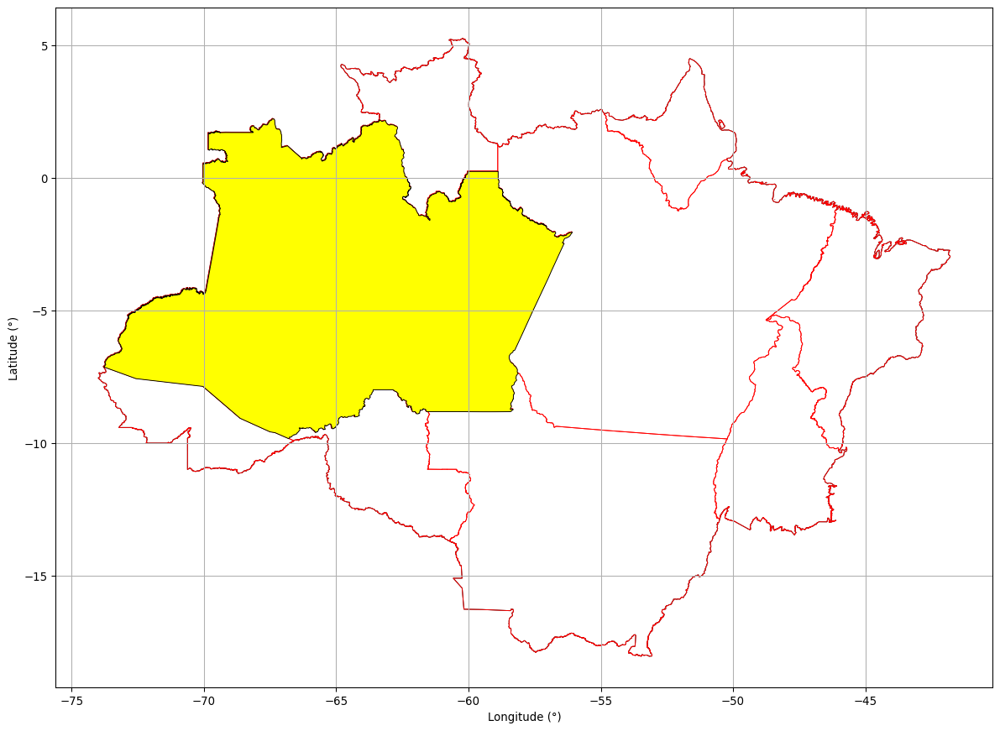
20 Análise do Estado do Amazonas.
20.1 Informações Gerais.
20.2 Glebas Federais na Unidade da Federação.
20.2.1 Área com Glebas Federais.
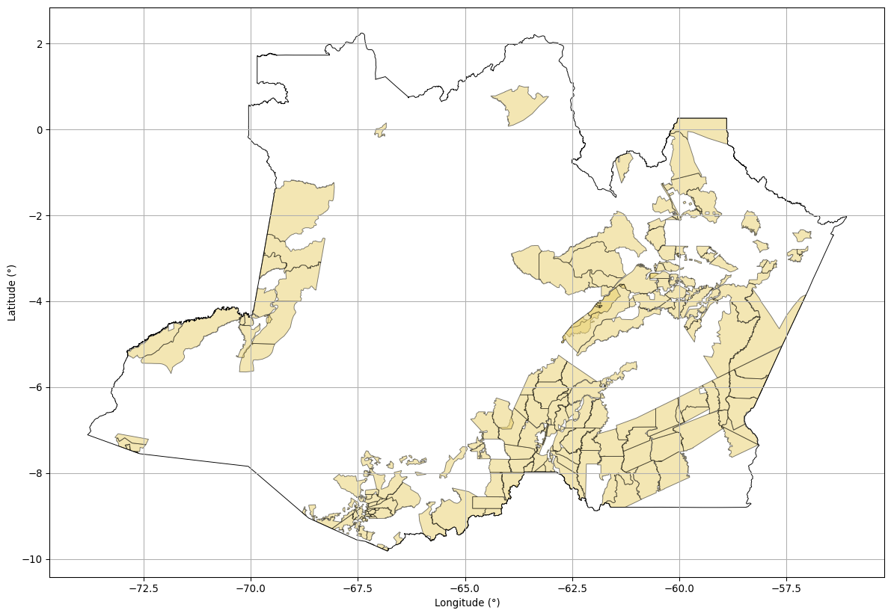
20.2.2 Área total de Glebas Federais no Estado do Amazonas: 404.509,10 km²
20.2.3 Percentual do Amazonas ocupado por Glebas Federais: 25,94 %
20.3 Florestas Públicas.
20.3.1 Florestas Públicas não destinadas.
Florestas Públicas do TIPO B (FPB) - São as florestas localizadas em áreas arrecadadas pelo Poder Público, mas que ainda não foram destinadas, de acordo com os dados baixados do Serviço Florestal Brasileiro.
fonte: Serviço Florestal Brasileiro
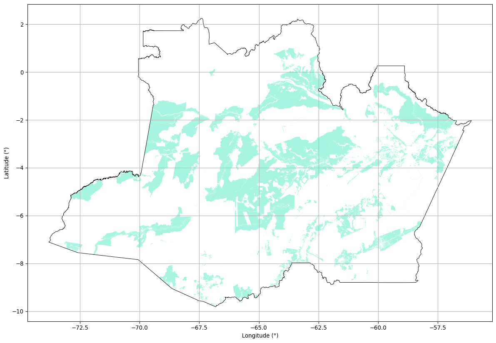
20.3.2 Área de Florestas Públicas não destinadas no Amazonas: 414.727,22 km²
20.3.3 Percentual do Amazonas ocupado por Florestas Públicas não destinadas : 26,60 %
20.4 Unidades de Conservação.
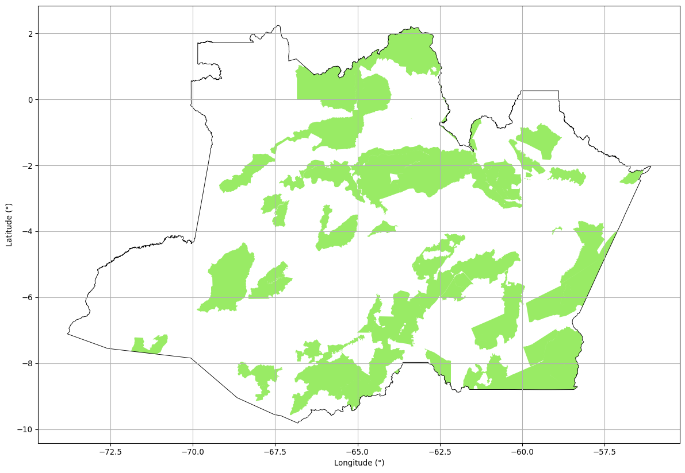
20.4.1 Área de Unidades de Conservação no Amazonas: 472.508,64 km²
20.4.2 O Percentual do Amazonas ocupado por Unidades de Conservação : 30,30 %
20.5 Terras Indígenas
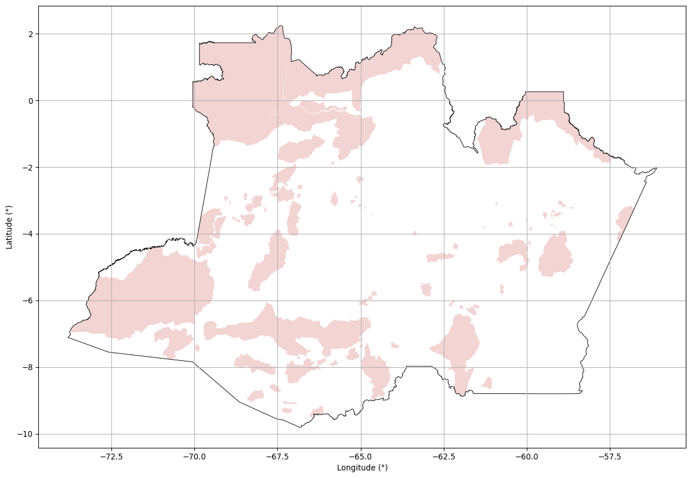
20.5.1 Área de Terras Indígenas no Amazonas: 455.381,19 km²
20.5.2 O Percentual do Amazonas ocupado por Terras Indígenas: 29,21 %
20.6 Projetos de Assentamento.
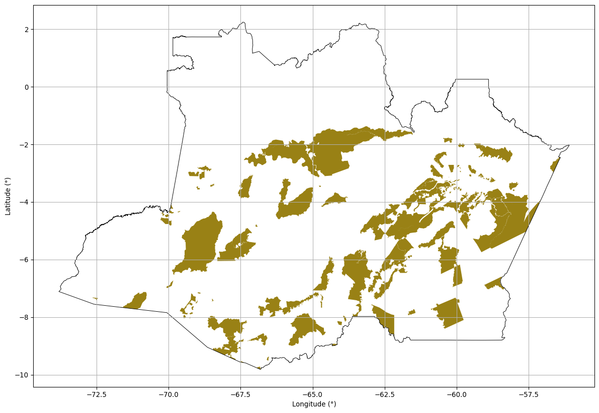
20.6.1 Área de Projetos de Assentamento no Amazonas: 250.179,43 km²
20.6.2 O Percentual do Amazonas ocupado por Projetos de Assentamento: 16,04 %
20.7 Territórios Quilombolas.

20.7.1 Área de Territórios Quilombolas no Amazonas: 7.476,71 km²
20.7.2 O Percentual do Amazonas ocupado por Territórios Quilombolas: 0,48 %
20.8 Certificações Particulares (SIGEF).
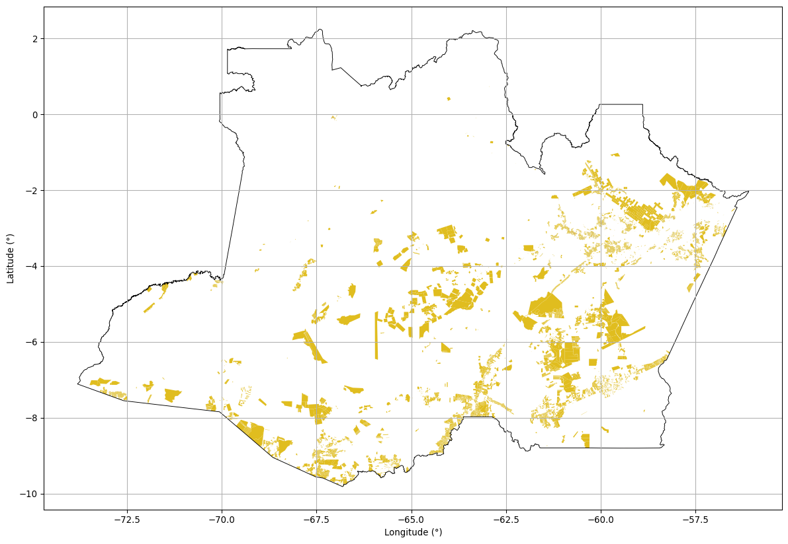
20.8.1 Área de Imóveis Certificados no Amazonas: 351.311,28 km²
20.8.2 O Percentual do Amazonas ocupado por Imóveis Certificados: 22,53 %
20.8.3 O Estado do Amazonas possui 34763 polígonos Certificados
20.9 Certificações Particulares (SNCI).
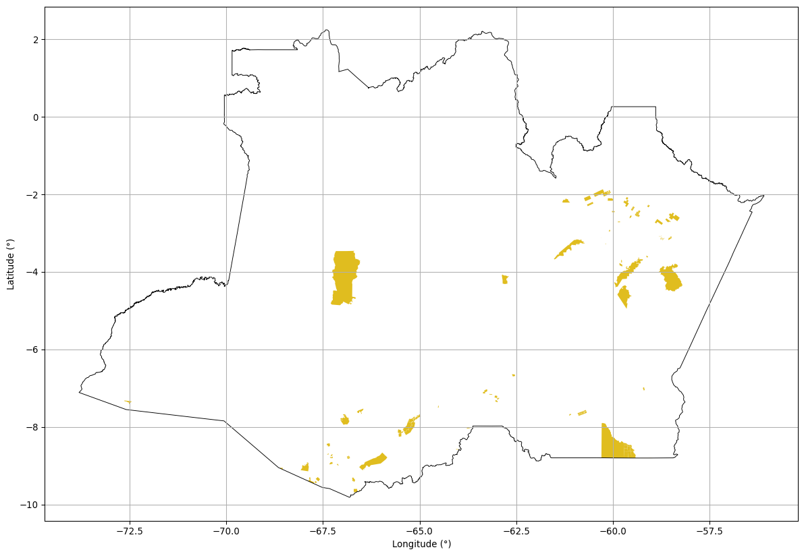
20.9.1 Área de Imóveis Certificados no Amazonas: 21.507,39 km²
20.9.2 O Percentual do Amazonas ocupado por Imóveis Certificados: 1,38 %
20.9.3 O Estado do Amazonas possui 129 polígonos Certificados
20.10 Análise de Sobreposições.
As análises de sobreposições visam mostrar a sobreposição entre as classes de áreas públicas existentes para que possamos determinar se a relação é concorrente ou não. A análise será elaborada tendo as Glebas Federais como ponto pincipal sendo comparadas com Florestas Públicas não destinadas, Terras Indígenas, Unidades de Conservação e Projetos de Assentamento.
20.10.1 Glebas Federais sobrepostas a Florestas Públicas não destinadas.
20.10.1.1 Glebas Federais com Floresta Pública não destinada.
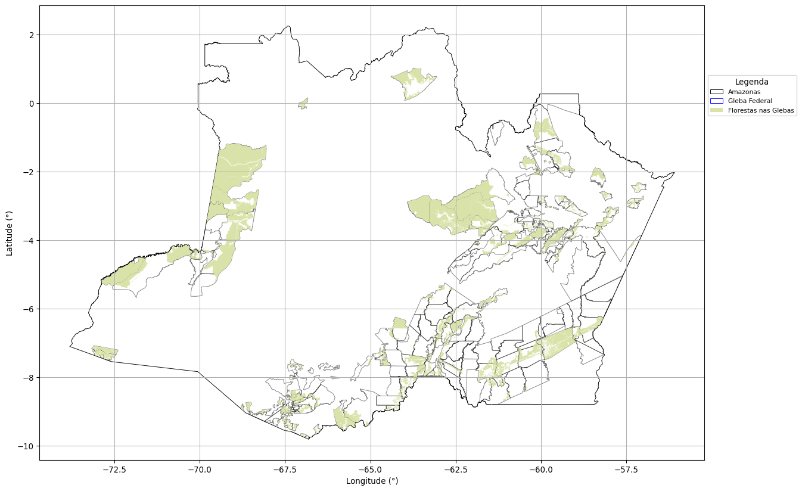
20.10.2 A área de Florestas Públicas não destinadas dentro das Glebas Federais no Estado do Amazonas é de: 97.398,85 km²
Dos 414.727,22 km² de Florestas Públicas classificadas na base do Serviço Florestal Brasileiro, 97.398,85 km² estão sobrepostas aos polígons de Glebas Públicas Federais registrados na base de dados do INCRA.
20.10.3 Glebas Federais sobrepostas a Unidades de Conservação.
20.10.3.1 Glebas Federais com Unidades de Conservação.
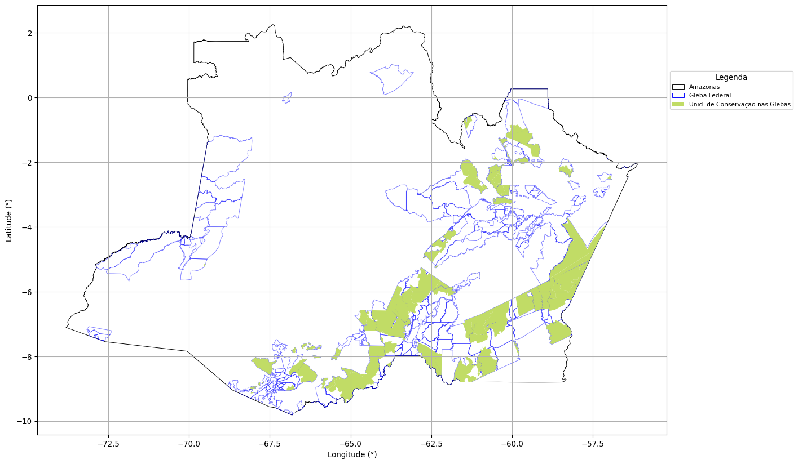
20.10.4 A área de Unidades de Conservação dentro das Glebas Federais no Estado do Amazonas é de: 141.722,35 km²
Dos 472.508,64 km² de Unidades de Conservação, 141.722,35 km² estão sobrepostas aos polígons de Glebas Públicas Federais registrados na base de dados do INCRA.
20.10.5 Glebas Federais sobrepostas a Terras Indígenas.
20.10.5.1 Glebas Federais com Terras Indígenas.
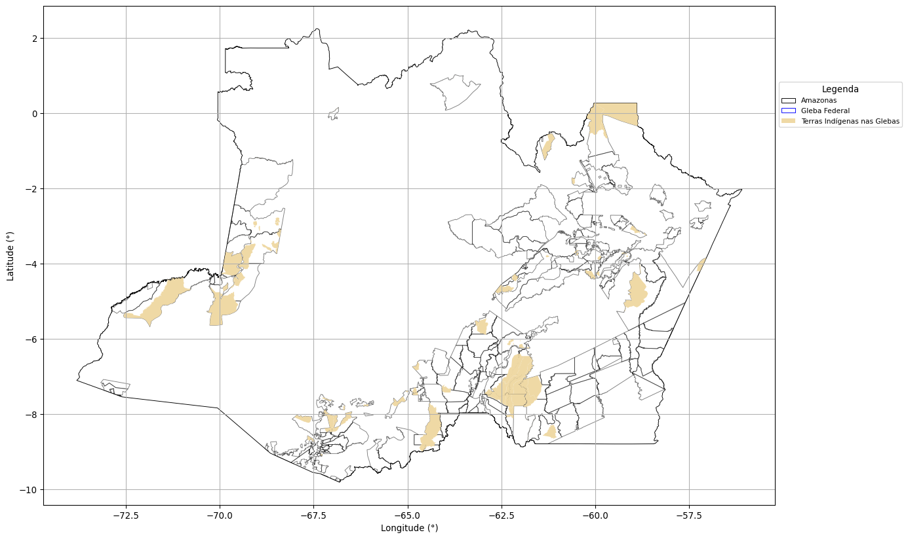
20.10.6 A área de Terras Indígenas dentro das Glebas Federais no Estado do Amazonas é de: 61.910,79 km²
Dos 455.381,19 km² de Terras Indígenas, 61.910,79 km² estão sobrepostas aos polígons de Glebas Públicas Federais registrados na base de dados do INCRA.
20.10.7 Glebas Federais sobrepostas a Projetos de Assentamento.
20.10.7.1 Glebas Federais com Projetos de Assentamentos.
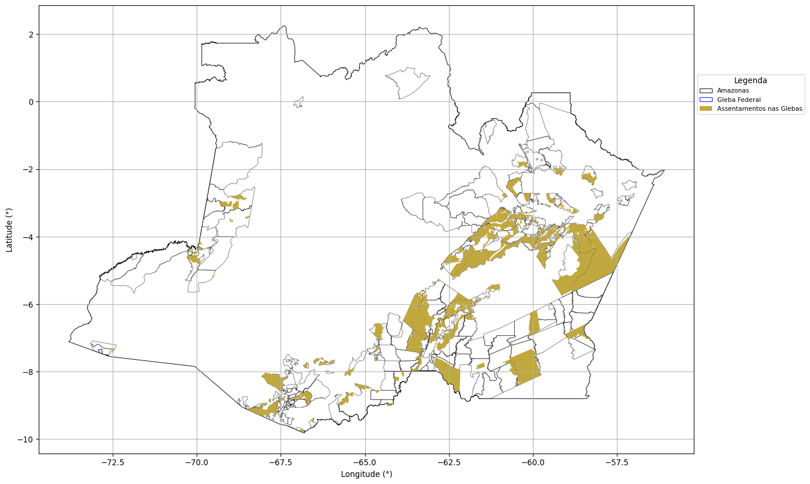
20.10.8 A área de Assentamentos dentro das Glebas Federais no Estado do Amazonas é de: 98.423,48 km²
Dos 250.179,43 km² de Assentamentos, 98.423,48 km² estão sobrepostas aos polígons de Glebas Públicas Federais registrados na base de dados do INCRA.
20.10.9 Glebas Federais sobrepostas a Territórios Quilombola.
20.10.9.1 Glebas Federais com Territórios Quilombola.
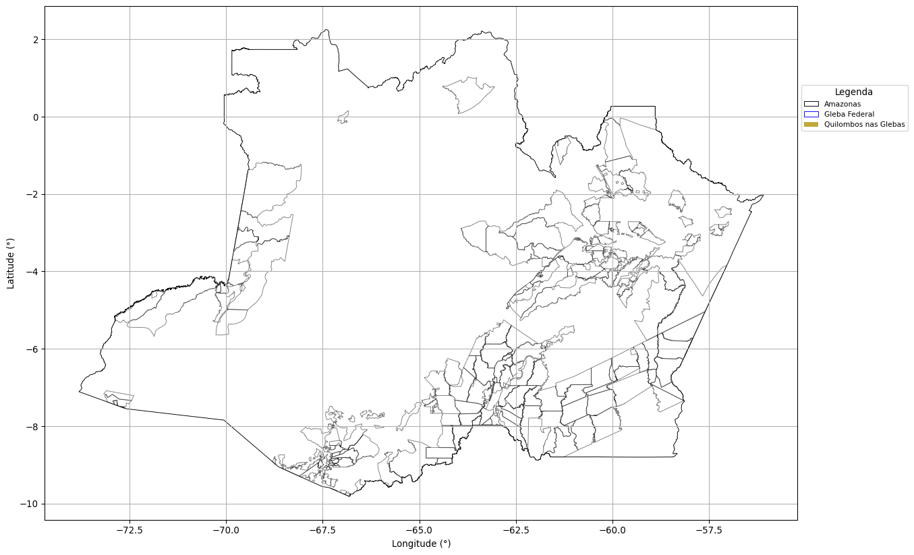
20.10.10 A área de Territórios Quilobola dentro das Glebas Federais no Estado do Amazonas é de: 44,12 km²
Dos 7.476,71 km² de Territórios Quilobola, 44,12 km² estão sobrepostas aos polígons de Glebas Públicas Federais registrados na base de dados do INCRA.
20.10.11 Glebas Federais sobrepostas a Imóveis Certificados.
20.10.11.1 Glebas Federais com Imóveis Certificados - SIGEF.
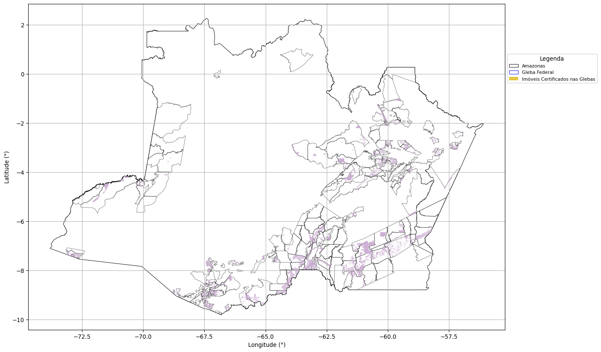
20.10.12 A área de Imóveis Certificados dentro das Glebas Federais no Estado do Amazonas é de: 214.748,77 km²
Dos 351.311,28 km² de Imóveis Certificados, 214.748,77 km² estão sobrepostas aos polígons de Glebas Públicas Federais registrados na base de dados do INCRA.
20.10.12.1 Glebas Federais com Imóveis Certificados - SNCI.
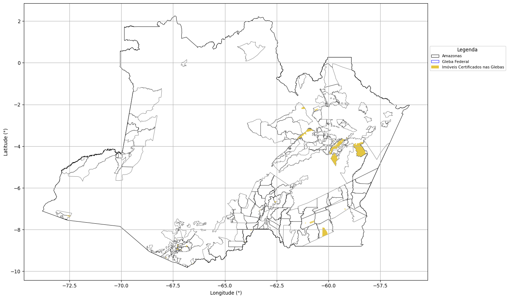
20.10.13 A área de Imóveis Certificados dentro das Glebas Federais no Estado do Amazonas é de: 1.654,57 km²
Dos 21.507,39 km² de Imóveis Certificados, 1.654,57 km² estão sobrepostas aos polígons de Glebas Públicas Federais registrados na base de dados do INCRA.